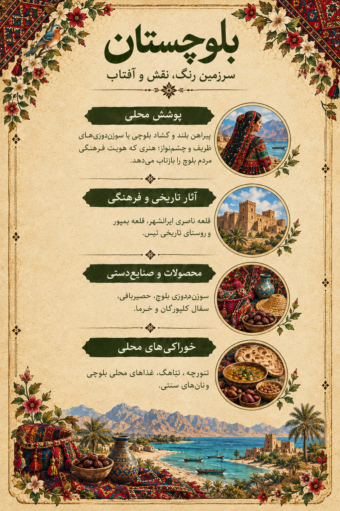

سیستان و بلوچستان Sistan and Baluchestan

روایت این اثر The Story Behind the Artwork
این اثر بازآفرینی هنری از رنگها و نقشهای پوشش زنان بلوچ است. سوزندوزیهای هندسی، رنگهای زنده و پارچه تیره، جلوهای ویژه به لباس میبخشند. همراهی این نقشها با چشمانداز ساحلی مکران، روایتی تصویری از پیوند فرهنگ، طبیعت و هنر دست زنان منطقه میسازد. تصویر حاضر بازآفرینی هنری است و به یک روستا یا لباس تاریخی مشخص نسبت داده نمیشود.
This artwork is an artistic reinterpretation of the colors and patterns of Baluchi women's clothing. Geometric embroidery, vivid colors and dark fabric give the garment its distinctive character. Together with the Makran coastal landscape, the artwork explores the connection between culture, nature and women's craftsmanship. It is not attributed to a specific village or documented historical garment.
سوزندوزی؛ هنر زنان بلوچ Baluchi Embroidery
سوزندوزی بلوچ از هنرهای شناختهشده منطقه است. این هنر در بخشهایی مانند پیشسینه، سرآستین و قسمتهای مختلف لباس دیده میشود. نقوش هندسی، خطوط شکسته و ترکیب رنگها از ویژگیهای آن هستند. شیوه اجرا و نقشها میتوانند از منطقهای به منطقه دیگر تفاوت داشته باشند.
Baluchi embroidery is one of the region's recognized crafts. It decorates areas such as chest panels, cuffs and other parts of garments. Geometric patterns, angular lines and vivid color combinations are among its distinctive features. Techniques and designs can vary between areas.
روستاها و مراکز سوزندوزی Embroidery Villages and Centers
در منابع فرهنگی از مکانهای زیر بهعنوان مناطق مرتبط با رواج سوزندوزی و شیوههای محلی آن یاد شده است. این فهرست، محل دقیق لباس تصویر را مشخص نمیکند.
Cultural sources identify the following areas with embroidery practices and local variations. This list does not establish the exact origin of the garment shown in the artwork.
میراث فرهنگی و دیدنیهای منطقه Cultural Heritage and Places to Explore
روستای تاریخی تیس Historic Village of Tis
تیس در نزدیکی چابهار قرار دارد و تاریخ آن با ساحل مکران و مسیرهای دریایی منطقه پیوند خورده است. قلعه پرتغالیهای تیس از بناهای تاریخی شناختهشده این محدوده است.
Tis, near Chabahar, is connected to the history of the Makran coast and regional maritime routes. The Portuguese Castle of Tis is one of the area's recognized historic structures.
سفال کلپورگان Kalpurgan Pottery
سفالگری سنتی کلپورگان یکی از هنرهای شناختهشده بلوچستان است و مهارت دست و انتقال تجربه میان نسلها را به نمایش میگذارد.
Traditional Kalpurgan pottery is a recognized craft of Baluchestan, reflecting hand skills and knowledge passed between generations.
حصیربافی و هنرهای دستی Mat Weaving and Handicrafts
حصیربافی، سوزندوزی و دیگر هنرهای محلی در کنار نخلستانها و سواحل مکران، بخشی از تنوع فرهنگی و طبیعی استان را شکل میدهند.
Mat weaving, embroidery and other local crafts, alongside palm groves and the Makran coast, form part of the province's cultural and natural diversity.
خوراکیها و طعمهای محلی Local Food and Flavors
تباهگ، تنورچه، خرما و خوراکهای محلی ساحل مکران از طعمهایی هستند که میتوان در معرفی فرهنگ غذایی منطقه به آنها پرداخت. شیوه تهیه غذاها ممکن است میان شهرها و خانوادهها متفاوت باشد.
Tabahag, Tannurche, dates and local Makran coastal dishes are among the flavors of the region. Recipes and practices may vary between towns and families.
لیبل اطلاعاتی اثر Artwork Information Label
لیبل اطلاعاتی این اثر را در این بخش قرار دادهایم تا بازدیدکنندگان بتوانند جزئیات بیشتری درباره روایت هنری و فرهنگی آن بخوانند.
The artwork's information label is displayed here for visitors who wish to explore its cultural and artistic details.
